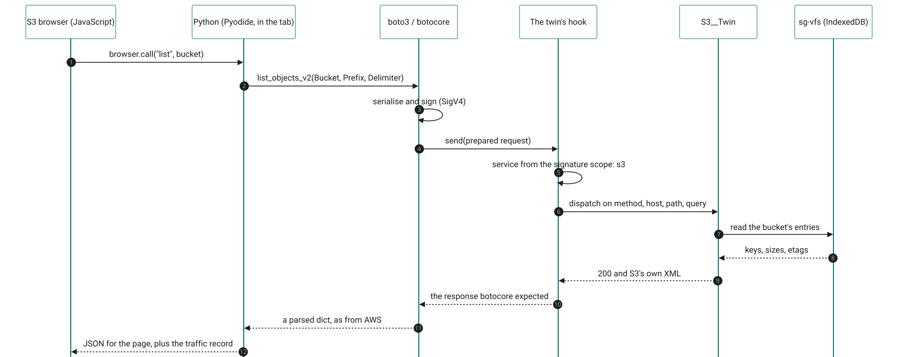
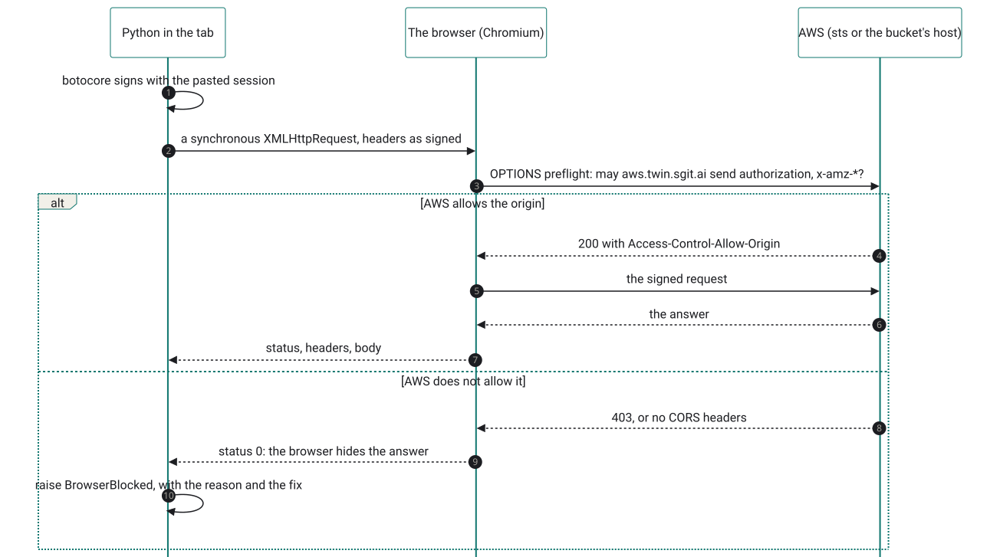
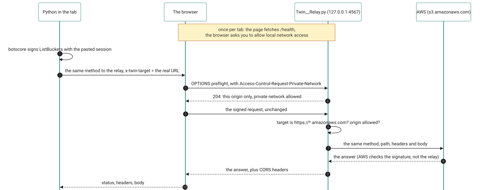

How it works: a live AWS session in a browser tab, step by step
When you paste a session, press Go live in the S3 browser and open a bucket, Python running inside the tab signs a request with your session, and either the browser sends it to AWS directly or a small program on your own machine passes it on. Nothing in between holds your secret key. This page takes each step in order: what runs where, which component makes which decision, what the browser allows and refuses, and what the local relay is and what it can see.
1. One hook, three routes
Everything starts from one decision, made in one place. The twin installs a hook inside botocore, the library under boto3 and OSBot-AWS, at the last point before a request leaves: after the request is built and signed, before it is sent. The hook reads which AWS service the request is for from its signature (the SigV4 credential scope, Credential=AKID/20261021/eu-west-2/s3/aws4_request), looks that service up in a route table, and sends the request one of three ways.

The diagram's source (Mermaid)
flowchart LR
code["Your code<br/>boto3 · OSBot-AWS · the S3 browser"] --> hook["The twin's hook<br/>inside botocore, after signing"]
hook -->|"route = twin"| twin["The Python twin<br/>answers S3 and STS<br/>from a virtual file system"]
hook -->|"route = live, direct"| cors{"Does AWS allow<br/>this page's origin?"}
cors -->|"yes: STS, IAM, EC2, Lambda,<br/>a bucket with a CORS rule"| aws[("Your AWS account")]
cors -->|"no: ListBuckets,<br/>a bucket without CORS"| blocked["BrowserBlocked<br/>named, not a timeout"]
hook -->|"route = live, relay"| relay["Twin__Relay.py<br/>on 127.0.0.1:4567"]
relay --> aws
hook -->|"route = replay"| rec["A recording<br/>of earlier traffic"]
twin --> vfs[("sg-vfs<br/>IndexedDB in the browser<br/>memory or disk in CI")]- twin: the Python twin answers, in AWS's own wire format, from a virtual file system. No network, no credentials. This is the default, and what CI uses.
- live: the request goes to AWS. In a browser, either directly, when AWS allows this page's origin, or through the relay, when it does not.
- replay: the answer comes from a recording of earlier traffic.
Hooking after signing is the choice everything else rests on. The twin sees exactly the bytes AWS would see, so its answers are tested against real requests; and a live request needs nothing added to it, so the twin never handles your secret key beyond what botocore already does.
2. Python in the tab
The S3 browser's buttons are JavaScript; everything behind them is Python. On first use the page loads Pyodide 0.28.3 (CPython compiled to WebAssembly), installs pinned wheels from PyPI (boto3 1.43.116, osbot-utils 3.75.0, osbot-aws 2.39.10), and unpacks this site's assets/py/aws_twin.zip. About 25 MB the first time, then from the browser's cache. A button press becomes one call, browser.call("list", {...}), into S3__Browser.py, which makes the same OSBot-AWS and boto3 calls a script on your laptop would.

The diagram's source (Mermaid)
sequenceDiagram
autonumber
participant B as S3 browser (JavaScript)
participant P as Python (Pyodide, in the tab)
participant C as boto3 / botocore
participant H as The twin's hook
participant T as S3__Twin
participant V as sg-vfs (IndexedDB)
B->>P: browser.call("list", bucket)
P->>C: list_objects_v2(Bucket, Prefix, Delimiter)
C->>C: serialise and sign (SigV4)
C->>H: send(prepared request)
H->>H: service from the signature scope: s3
H->>T: dispatch on method, host, path, query
T->>V: read the bucket's entries
V-->>T: keys, sizes, etags
T-->>H: 200 and S3's own XML
H-->>C: the response botocore expected
C-->>P: a parsed dict, as from AWS
P-->>B: JSON for the page, plus the traffic recordThe same package runs under pytest in CI and in the page; one test suite runs in both (run it here).
3. Where the session lives
The session you paste on the sessions page is kept in that tab's sessionStorage under aws.twin/session, with its expiry, and nowhere else: closing the tab removes it. Go live reads it from there (which is why it has to be the same tab), and hands it to Python, which sets it as the AWS environment variables of the Python inside the page and swaps the S3 browser's twin for one whose S3 and STS routes are live. Its first request is STS GetCallerIdentity, so the view can say which account and role it is now acting as. Live mode keeps nothing else, and nothing beyond the tab: the relay's address and the names of buckets you open by name, in the same sessionStorage. Back to the twin removes the session from Python again.
4. Live, directly: what the browser allows
In a normal Python, botocore opens its own sockets. A browser tab has no sockets, so the live route sends the already-signed request through the browser instead: Pyodide's urllib3 turns it into a synchronous XMLHttpRequest (botocore is synchronous Python, so the call has to block). The browser then applies its own rule, CORS: a page may read an answer from another origin only if that origin says so. Because the request carries authorization and x-amz-* headers, the browser first asks permission with an OPTIONS preflight.

The diagram's source (Mermaid)
sequenceDiagram
autonumber
participant P as Python in the tab
participant BR as The browser (Chromium)
participant A as AWS (sts or the bucket's host)
P->>P: botocore signs with the pasted session
P->>BR: a synchronous XMLHttpRequest, headers as signed
BR->>A: OPTIONS preflight: may aws.twin.sgit.ai send authorization, x-amz-*?
alt AWS allows the origin
A-->>BR: 200 with Access-Control-Allow-Origin
BR->>A: the signed request
A-->>BR: the answer
BR-->>P: status, headers, body
else AWS does not allow it
A-->>BR: 403, or no CORS headers
BR-->>P: status 0: the browser hides the answer
P->>P: raise BrowserBlocked, with the reason and the fix
endMeasured on 21 October 2026, with a preflight from https://aws.twin.sgit.ai:
| Service | Answers a browser? | What that means here |
|---|---|---|
| STS, IAM, EC2, Lambda, CloudWatch Logs, Cost Explorer, CloudFormation | yes, any origin | Direct works. The sessions page's check is STS, direct. |
| S3, a bucket with a CORS rule for this site | yes, that bucket | Direct works for that bucket. The rule, and how to add it. |
| S3, a bucket without one | no | Relay, or add the rule. |
| S3 ListBuckets (the service endpoint) | never | Relay. There is no setting that changes this. |
| The access portal's credentials API | no | Why sessions are pasted rather than fetched (measured). |
5. The local relay
The relay exists for the two "no" rows that matter to S3: listing buckets, and buckets without a CORS rule. It is one Python file, Twin__Relay.py, under 200 lines, standard library only, so it can be read in full before it is run:
curl -sO https://aws.twin.sgit.ai/aws_twin/core/Twin__Relay.py less Twin__Relay.py # read it first python3 Twin__Relay.py # http://127.0.0.1:4567, for https://aws.twin.sgit.ai only; Ctrl+C to stop
What it does is small. The page sends the signed request to the relay instead of to AWS, with the real AWS URL in an x-twin-target header. The relay checks two things, sends the request on to that URL unchanged, and returns AWS's answer with the CORS headers the browser wants. AWS checks the signature exactly as it would from anywhere else; to AWS the request simply comes from your machine.

The diagram's source (Mermaid)
sequenceDiagram autonumber participant P as Python in the tab participant BR as The browser participant R as Twin__Relay.py (127.0.0.1:4567) participant A as AWS (s3.amazonaws.com) Note over BR,R: once per tab: the page fetches /health,<br/>the browser asks you to allow local network access P->>P: botocore signs ListBuckets with the pasted session P->>BR: the same method to the relay, x-twin-target = the real URL BR->>R: OPTIONS preflight, with Access-Control-Request-Private-Network R-->>BR: 204: this origin only, private network allowed BR->>R: the signed request, unchanged R->>R: target is https://*.amazonaws.com? origin allowed? R->>A: the same method, path, headers and body A-->>R: the answer (AWS checks the signature, not the relay) R-->>BR: the answer, plus CORS headers BR-->>P: status, headers, body
Its rules
- Only AWS, only HTTPS. The target must match
https://…amazonaws.com; anything else is refused with 400. It is not an open proxy. - Only this site. It answers only requests whose
Originishttps://aws.twin.sgit.ai(or origins you pass with--origin); others get 403 and no CORS headers. - Only this machine. It listens on
127.0.0.1, not on your network. - Nothing added, little kept. It drops cookies,
Origin,Refererand the browser'ssec-*headers, forwards the rest as received, follows no redirects, and logs one line per request: method, host, path, status. Never a header or a body. - No credentials. It has none to use, and its
/healthanswer says so:{"relay": "aws.twin", "forwards_to": "*.amazonaws.com", "holds_credentials": false}. It usesHTTPS_PROXYif your machine needs one.
What it can see, precisely

The diagram's source (Mermaid)
flowchart LR
subgraph tab["The browser tab"]
secret["Secret access key<br/>never leaves the tab"]
sign["botocore signs<br/>one request"]
secret --> sign
end
subgraph wire["What crosses to the relay and AWS"]
req["Method, URL, body<br/>access key id · session token<br/>a signature for this request only"]
end
subgraph relay["Twin__Relay.py"]
fwd["Checks origin and target<br/>forwards byte for byte<br/>logs method, host, path, status"]
end
sign --> req --> fwd --> aws[("AWS verifies<br/>the signature")]A signature is valid for one request (method, path, query, the signed headers, the body's hash) and only for a few minutes around its timestamp. So the relay can forward what you sent, and could resend that same request within that window, but it cannot make a different request: that needs the secret key, which it never sees. This is why it runs on your machine, from code you can read, rather than as a service somewhere. And the session itself expires within the hour.
The browser's local-network prompt
Chromium now asks before a public website reaches a service on your own machine or network (Local Network Access): the first time the page contacts the relay, a permission prompt appears, and the request waits until it is answered. Allow it for aws.twin.sgit.ai. The relay's preflight answer carries Access-Control-Allow-Private-Network: true, the header the browser looks for. One detail mattered: a synchronous request, the kind botocore makes, cannot raise that prompt, and simply hangs. So Go live first sends an ordinary asynchronous fetch to /health; the prompt appears then, before any signed request, and a relay that is not running is reported by name (RelayNotRunning).
6. Read-only unless you say otherwise
A live session can do whatever its role allows. The S3 browser adds its own brake on top: in live mode, every operation that writes is refused before any request is made, unless Allow writes was ticked when you went live.

The diagram's source (Mermaid)
flowchart LR
btn["A button in the S3 browser"] --> callop["browser.call(op)"]
callop --> mode{"Live mode?"}
mode -->|"no: the twin"| run["Run it"]
mode -->|"yes"| write{"A write?<br/>create, upload, delete,<br/>copy, rename, metadata"}
write -->|"no: a read"| run
write -->|"yes"| allowed{"Writes allowed<br/>for this session?"}
allowed -->|"no (the default)"| refuse["ReadOnly<br/>refused before any request"]
allowed -->|"yes, ticked"| run
run --> record["Recorded: operation,<br/>status, time, route"]The other brake is the role. A session from a narrow permission set (least privilege for the twin) makes the twin's mistakes, and yours, small ones.
7. Every request recorded
Whatever the route, the hook records each request: the service and operation (s3.ListObjectsV2), the route (twin or live), the status, and the time taken. The S3 browser shows it under Traffic, and each log line says whether it was live. For live requests the twin still names the operation, by asking a throwaway twin to parse the request without answering it. The same records are what the replay route plays back: a recording of a live session becomes a test fixture that needs no account.
8. How this was checked
- The whole live path, in a real browser, without an AWS account. A headless Chromium test (Playwright) pastes a session; goes live directly, where real STS refuses the invented keys and the page says so by name; goes live through the relay; lists buckets, opens one, previews a file, is refused a delete in read-only mode, sees the signed calls in Traffic, opens a bucket by name, and goes back to the twin. Behind the relay, standing in for AWS, is the twin's own HTTP server. Ten checks, all passing.
- The relay, under pytest: its origin and target rules, its preflight, and boto3 through it (create a bucket, upload, download, list, a missing key, an upload without a content type) against the same stand-in. The requests arrive signed and unchanged. And the read-only guard: a delete refused with no request made, then let through once writes are allowed.
- Real AWS, with invented keys (opt-in,
AWS_TWIN_LIVE_TESTS=1): STS GetCallerIdentity and S3 ListBuckets through the relay reach AWS and come back asInvalidClientTokenIdandInvalidAccessKeyId: AWS read the signatures and rejected the keys, which is the round trip working. - A real session: Dinis's own Identity Center session checked against AWS STS from the sessions page, account and role returned. Browsing a real account's buckets is the next thing to watch.
Three bugs the stand-in caught
Each would have broken the first real use, and none shows up against the twin route alone:
- Uploads hung. botocore sends some bodies with
Transfer-Encoding: chunked; forwarded as is, with the body already whole, the far end waited for chunks that never came. The live path now drops the framing headers and lets the sender recompute them from the bytes. - Uploads arrived empty. Recording the request read its body stream to the end, and the request then went out with nothing left to send. The body is now read once and kept as bytes.
- Downloads failed with IncompleteRead. Recording the response drained its stream before botocore read it. The live path now hands botocore a fresh response built from the recorded bytes.
The files
| File | Does |
|---|---|
| aws_twin/core/Twin.py | The hook, the route table, recording |
| aws_twin/core/Twin__Browser_Http.py | Sending a signed request from the browser, directly or to the relay; BrowserBlocked |
| aws_twin/core/Twin__Relay.py | The relay |
| aws_twin/web/S3__Browser.py | The S3 browser's Python: every button, live mode, the read-only guard |
| assets/s3/s3-browser.js | The S3 browser's page: views, the Live session form, the /health check |
| tests/test_relay.py | The relay's tests |
The diagrams are Mermaid, rendered to SVG when the site is built (admin/build/diagrams.js), so this page loads no diagram script; each one's source is under it.